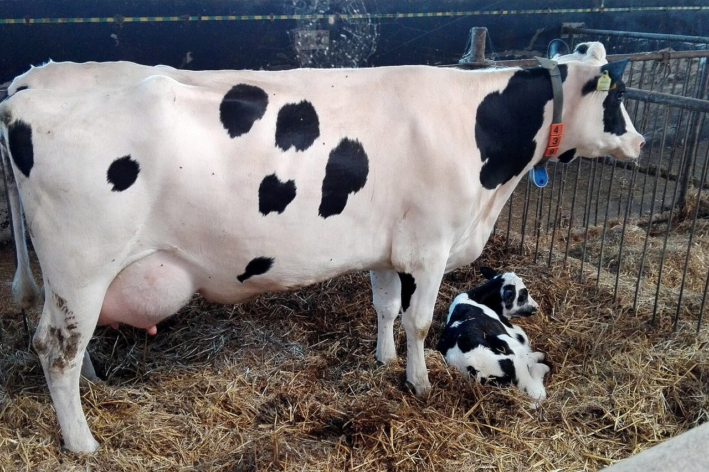
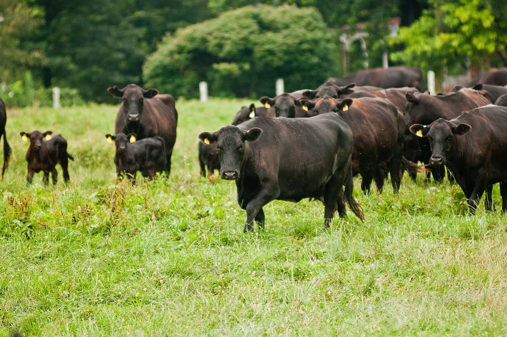

Testing Your Herd for BVD Persistent Infection
What you don't know will hurt you
A persistently infected (PI) animal was infected before birth, sheds the virus for life, and is found with one ear notch or blood sample. BVD PI testing is for cattle and bison; goat and sheep herds should call the lab and ask about disease monitoring instead.
The program
The whole-herd program
PI testing pays off as a program, not a one-time check. This is how it runs in a herd that stays clean:

- Screen the herd once. Every animal gives an ear notch or a blood sample, so you know where you stand.
- Notch every calf at birth. Batch the notches and send them weekly with the form.
- Test every purchased addition before it joins the herd, bulls included.
- If a calf tests positive, test the dam too. A PI dam always produces a PI calf, though most PI calves come from dams that were only briefly infected during pregnancy.
- A positive animal is isolated and either retested or removed on the veterinarian's advice.
- Vaccinate calves and open adults on a timed schedule, so the virus cannot spread if it ever arrives.

Inexpensive insurance. At $6.95 per animal, testing your herd for BVD PI has never been easier or more economical. Volume discounts are available. Give us a call.
Plan it
BVD program planner
Enter your herd size to see how many notches a week the program takes.
The science
Understanding BVD and persistent infection
What is Bovine Viral Diarrhea virus (BVD)?
The BVD virus is one of the most economically significant viruses affecting both the dairy and beef industries in the U.S. It has been estimated that as many as 70% of BVD virus infections are sub-clinical. These infections may not be readily visible but can be costly by reducing growth, production and reproduction within a herd.
How is BVD transmitted?
Cattle infected with BVD can shed virus through virtually any bodily fluid, making it one of the most contagious diseases in U.S. cattle herds.
What is a persistent BVD infection?
Some calves are born persistently infected (PI) with BVD virus, posing a serious threat to the health of the herd. PI calves are born from a pregnant cow that is exposed to BVD virus during the first 5 months of gestation. These PI calves may be born weak, deformed, or may appear completely normal, yet they always shed large amounts of virus into their environment.
What effect can a PI animal have on the rest of the herd?
In a herd situation, a single PI animal can expose many other pregnant cows that may then produce PI calves of their own. Since a PI animal sheds vast amounts of BVD virus, it can cause a wide array of health problems within a herd or pen. Increased respiratory disease (pneumonia), diarrhea (scours), and reproductive failures (abortions, mummifications, congenital defects) are the main symptoms of cattle challenged with BVD virus.
Testing and prevention
Testing and prevention
How can I test my herd to see if BVD is already present?
Calves less than 12 months old should be tested by sending a skin (ear notch) sample to our lab. Adult cattle can be tested with either a blood (serum) sample or a skin sample (ear notch) submitted to our lab.
How can I keep BVD from entering my herd?
Control and prevention of BVD in your herd involves a two-pronged attack: PI testing and proper vaccination. Once you have screened your cattle initially for PI, testing all future calves and purchased additions will prevent a PI BVD animal from physically entering your herd. Vaccinating your calves and open adults with several properly timed doses of Express FP10 vaccine will keep the virus from spreading within your herd should they ever be exposed. Call or email us for a specific testing and vaccination plan for your herd.
Pricing
How much does the PI test cost?
BVD PI testing (skin or blood) is $6.95 per animal. Volume discounts are available by phone at (715) 653-2201. One published study showed that a single PI animal in a dairy herd resulted in further health-related losses of over $35.00 for every other cow in the herd.
Collecting samples
How do I obtain a skin or blood sample?
A medium pig ear-notcher works best on the lower aspect of the ear. The notch can be seen from a distance and does not affect the ear flap. Place each skin sample into a separate, labeled tube. Blood samples should be collected into a 3cc or 5cc red-top tube using a new needle for each animal.
Getting started
A small (2cc) sample of blood from adult cattle can be used in place of an ear notch if desired. Place ear notch or blood samples in an air-tight zip-lock bag prior to shipment. Include ice packs in the box to keep samples cool during transit. Complete the submission form and include it in the shipping box.
See our shipping instructions and download the test form to mail in with your blood sample or ear notch.
Forms
Download the BVD PI test form
Learn how you can adopt an inexpensive laboratory test for persistently infected (PI) animals, plus other proven biosecurity measures, to increase your herd's profitability through improved health management. Call us at (715) 653-2201 or contact us for more information.